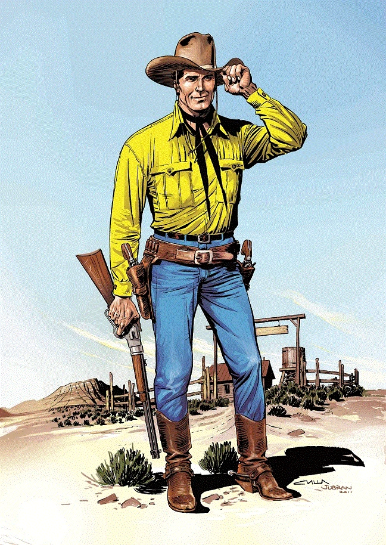
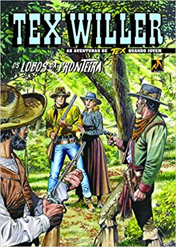
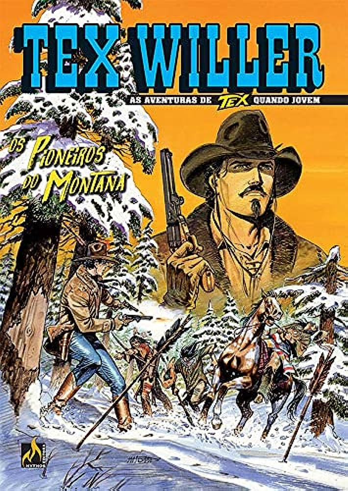
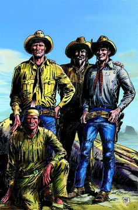

Faroeste Tex
Tex ou Tex Willer é um personagem de história em quadrinhos, criado em 1948 e originalmente publicado na Itália. Tex é um dos personagens de westerns mais longevos da história dos quadrinhos, sendo publicado em diversos países do mundo. Com o balão "Por todos os diabos, será que ainda estão nas minhas costas?", começava a saga de um dos mais famosos cowboys dos quadrinhos. De 1948 a 1967 foram 36 histórias no formato de tiras semanais. No começo, Tex cavalgava sozinho, seu cavalo Dinamite nem tinha nome e ele era fora-da-lei. Outro fator decisivo para o sucesso é o bom humor presente nas histórias. A comédia acontece principalmente quando Kit Carson, o parceiro de Tex, começa com sua onda de pessimismo e reclamações. não há dúvida que o principal motivo que faz de Tex um sucesso é a ação constante das aventuras e o senso de justiça. Tex é um atirador preciso tanto com o rifle como com o revólver e não nega ajuda a quem quer que seja para combater injustiças. Também é um ótimo cavaleiro e sabe usar muito bem a faca e o laço.
Confira algumas imagens da história:



